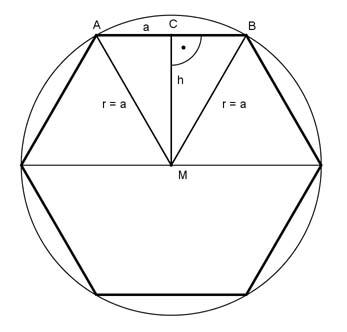

Pythagoras Aufgabe 49 Berechnen Sie die Seite a eines regelmäßigen Sechsecks in cm, wenn seine Fläche A = 36 cm² beträgt.  36 cm² Ein Teildreieck hat eine Fläche von -------- = 6 cm² 6 a = r wegen regelmäßigem Sechseck BC = a/2 Satz von Pythagoras im Dreieck MBC: a a a² = h² + (---)² | -(---)² 2 2 a a² h² = a² - (---)² = a² - ----- 2 4 3a² h² = ------ |√ 4 h = 0,87 * a a * h A = -------- 2 0,87 * a² 6 = ----------- 2 12 = 0,87 * a² | :0,87 a² = 13,8 cm² |√ a = 3,7 cm